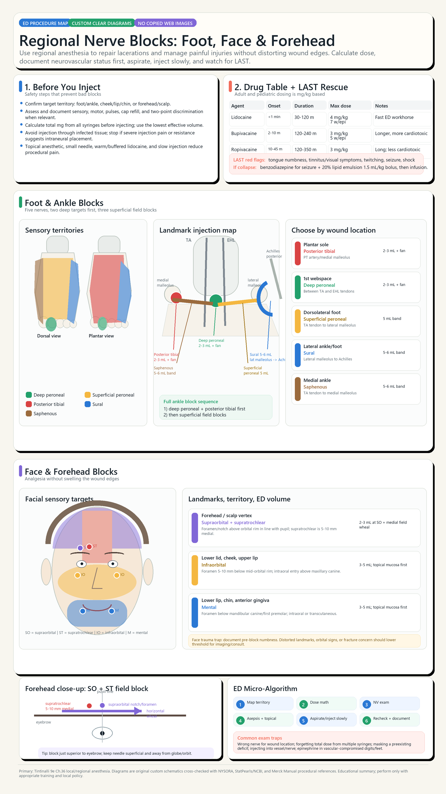

Back to infographics
Tintinalli Ch.36, Ch.245, Ch.259
Custom deterministic diagram poster

Source basis:
Tintinalli Emergency Medicine 9th ed local extract, mainly Chapter 36 for local anesthetic pharmacology, dose ceilings, LAST, regional anesthesia safety, ankle/foot blocks, and facial blocks; Chapter 245 for dental/mental block support; Chapter 259 for facial trauma sensory exam caveats. External procedural references used for diagram cross-checking only: NYSORA ankle block, StatPearls/NCBI supraorbital/supratrochlear/infraorbital/mental blocks, and Merck Manual ophthalmic/infraorbital/mental nerve block procedures. No external copyrighted procedural images were copied into the poster. External refs:
NYSORA ankle block
|
StatPearls supraorbital nerve block
|
StatPearls supratrochlear nerve block
|
StatPearls infraorbital nerve block
|
StatPearls mental nerve block
|
Merck ophthalmic nerve block
|
Merck infraorbital nerve block
|
Merck mental nerve block
. The poster was drawn as deterministic vector-style diagrams in Python/Pillow, exported at 2160x3840, then upscaled 2x to 4320x7680. No AI-generated anatomy or external procedural images were copied.